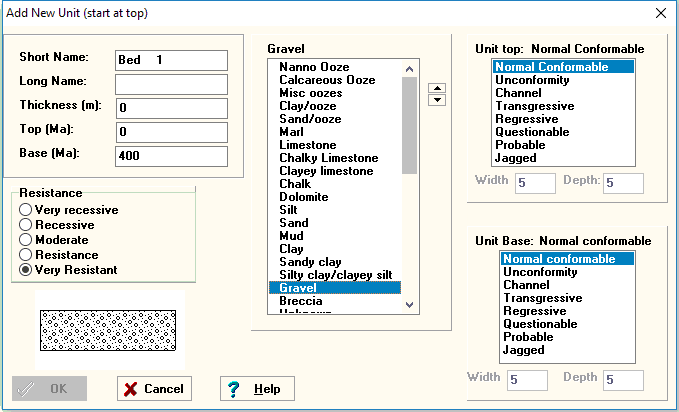

STRATCOL Unit Edit Window
The unit edit window allows the user the enter stratigraphic units, or to modify those that have been entered.

| Left column | Center column | Right column |
The resistance and thickness options are not required for time correlation diagrams, while the ages are not required for rock thickness diagrams. By entering both, however, your data files can be plotted in both formats. Buttons
|
Select lithology pattern. This uses the current set, picked on the file menu. See the effects graphically on the lower left of the form. |
Some of the boundaries require setting a width and depth parameter which determine how the boundary is drawn. Where required you will be able to enter values; otherwise the options are not enabled for those boundaries which take no user-defined parameters. See the effects graphically on the lower left of the form. |
Last revision 1/18/2018